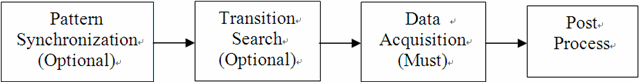
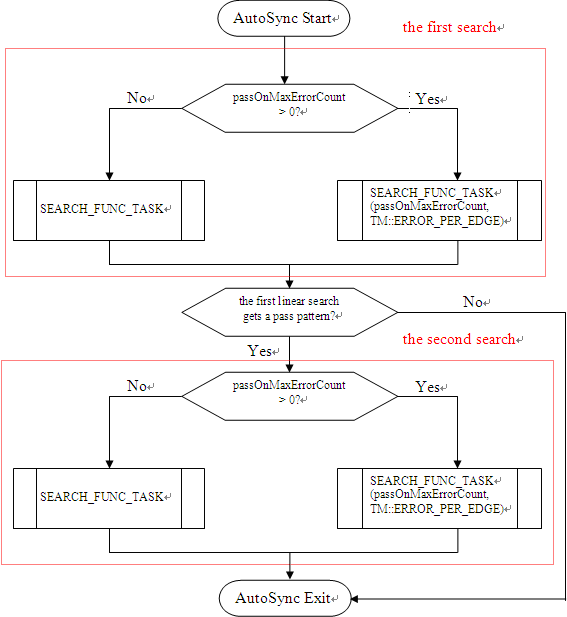
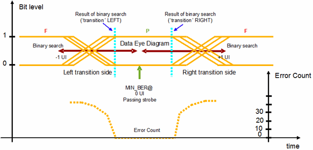
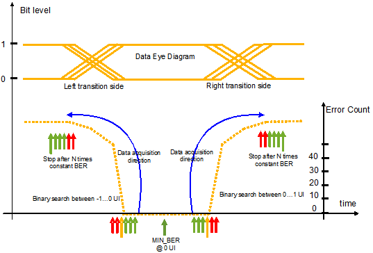
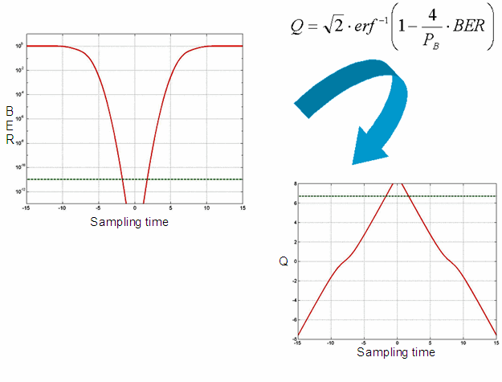

JitterSeparation
This test method calculates the jitter on the device output and separates the random jitter and deterministic jitter. As a result, the random jitter, deterministic jitter and total jitter will be reported or logged.
This test method supports multisite measurements and multiport measurements. Only PinScale test systems are supported by the test method.
Generally, this test method performs jitter test via shifting the value of a spec variable. When the spec value is shifted, a functional test will be executed and the error count data is retrieved. Jitter histogram is calculated through analyzing the error count data.
Four major steps are involved in this JitterSeparation test method. The execution flow is shown in the figure below.

Pattern synchronization tries to find the compare edge position where the pattern passes. Transition search finds the bit transition position (the pass-to-fail or fail-to-pass position) needed in data acquisition. Data acquisition captures the error count data in the bit transition area. Post process calculates the random jitter, deterministic jitter and total jitter according to the input of error count and output the result.
The first two steps are optional and can be skipped by setting the corresponding parameters. The last two steps are mandatory for jitter separation measurement.
Pattern synchronization (AutoSync)
Pattern synchronization can be
enabled by setting autoSync to ON. A linear search is
executed in the range defined by start and stop. The
search resolution is defined by the parameter autoSync.stepWidth. A timing
spec variable pinName_specName_postfix is used in the spec search.
To avoid a marginal pass pattern, the second linear search will be done to the pass pattern. The synchronization position is the mean value of the passing area.
The figure below shows the
execution sequence of the AutoSync.

The selection of the parameter autoSync.stepWidth is important and should be carefully done to achieve short test time and a reliable synchronization result. Its value should neither exceed the minimum eye opening of the data pattern, nor fall significantly below the minimum eye opening value. It is recommended to have one passing strobe position within the minimum expected eye opening.
If the parameter autoSync is set to ON, the timing specification variable will be reset to its original value at the end of the measurement. If the pattern is already synchronized (passing functional test), do not execute the AutoSync routine and set the parameter autoSync to OFF.
The AutoSync routine
will also find a synchronization position for a failing pattern if the
passOnMaxErrorCount parameter is set to a positive number. If the error
count of a strobe position is less than passOnMaxErrorCount,
the position will be considered as pass. This is useful for
measurements where the pattern is not finally debugged and just a few "fails" are
remaining.
If the AutoSync routine is executed and no pass position is found, the execution of jitterSeparation test method will be stopped.
Transition search
For accurate jitter measurements, the data acquisition should use a fine resolution which might lead to longer test time. The trade-off between accuracy and test time raises the need for an optimization of the exact acquisition area. Areas with a stable error count (for example, the eye opening) does not contribute to the measurement accuracy and should be avoided.
Therefore the first data acquisition should start at the first position where the error count starts to increase/decrease.
Transition search can be enabled by setting the parameter transitionSearch to ON. The transition search algorithm requires a passing (the error count < passOnMaxErrorCount) pattern. The start point of the transition search is the passing synchronization position that was either achieved by previous tests or by the AutoSync routine. From this start point, a binary search with the range defined by UI_width and the resolution defined by dataAcquStepWidth on both left side and right side will be performed.
The figure below shows the transition search process.

Data acquisition
During data acquisition, the compare strobe will
linearly be moved through a defined area of the data eye and the error count will be captured on
all measurement pins in parallel. The step size is defined by the parameter
dataAcqu.stepWidth. This parameter determines the accuracy
of the measurement and the execution time.
In the following figure, the data acquisition procedure is illustrated. The acquisition is always from the bottom of lowest error count area to left side or to right side.

The test method checks for a steady error count as stop criteria (optimized data acquisition stop).
There are eight cases for the range of data acquisition. The table below shows the details.
Case No. |
AutoSync |
Transition Search |
Data Acquisition |
start time |
stop time |
|
|---|---|---|---|---|---|---|
Mode |
Result |
Mode |
Result |
|||
2 |
OFF |
ON |
Pass |
pass/fail transition of Transition Search |
Optimized data acquisition stop |
|
3 |
OFF |
ON |
Fail |
- Measurement stops |
- |
|
4 |
ON |
Pass |
OFF |
AutoSync position |
Optimized data acquisition stop |
|
5 |
ON |
Fail |
OFF |
- Measurement stops |
- |
|
6 |
ON |
Pass |
ON |
Fail |
- Measurement stops |
- |
7 |
ON |
Pass |
ON |
Pass |
pass/fail transition of Transition Search |
Optimized Data Acquisition stop |
8 |
ON |
Fail |
ON |
|
- Measurement stops |
- |
Post process
The jitter separation is done via the Q-factor method. The starting point for the jitter separation with the Q-factor is the bathtub curve of the error count data. After the data is captured, the Bit Error Rate (BER) of each sampling point will be calculated by dividing the recorded error count by the total number of bit in the vector stream.
Then the bathtub curve is transferred to the Q-space for the selected BER range
(fittingRangeMax, fittingRangeMin) as in the figure
below. The appropriate selection of the fitting range is crucial for meaningful jitter
separation results. Make sure that at least two sample points exist in the selected fitting
range. The quality of the fitting can be reflected by the r2 factor that will
be reported in the report window. A perfect fitting is achieved with r2 = 1.

A fitting on the two slopes of the Q-space curve will be done. The fitting on the selected range of the Q-space curve will give two straight lines with a certain slope and a certain distance point. The respective slope is determined by the Random Jitter, while the distance of the two slopes is determined by the Deterministic Jitter. Therefore, the random Jitter can be calculated for each side of the data eye. In theory they should be the same for both transition, but in practice this is not always the case. The total random jitter is the average of the left side and the right side. The deterministic jitter gets calculated by the distance of the means of the two slopes. the Total jitter consists of deterministic jitter and random jitter. The absolute random jitter (peak-peak) depends on the target BER number. So the total jitter is also related to the target BER number.
In the report window the deterministic jitter, random jitter and total jitter will be printed. Additionally, the mean values and the r2 fitting factors will be reported.
This test method supports test table. But you need to enter the test names manually in the parameter. You can use both test table and testflow limits in a testflow. The test table has higher priority than testflow limits. If a test name used in the test flow is defined in both test table and testflow limits, the value defined in the test table will be used.
Parameter |
Type |
Description |
|---|---|---|
pinList |
PinString |
The list of the pin or pin groups that the spec is shifted for. The member of pin list needs to be O or IO digital pins or pin groups, which are delimited by commas. For differential pins, you only need to input the positive pins. |
portName |
string |
(optional) Port name the pinList belongs to. Default value is @. Only pins belonging to one port can be measured together. |
specName_postfix |
string |
The postfix used to define the spec variables. A spec variable corresponding to each test pin must be defined to be used for jitter measurement. For example, if Tx0 is the pin to be measured, the spec variable to use is Tx0_offset. Then this parameter needs to be set as "offset". |
UI_width |
SpecValue |
The time interval of a bit in the test pattern. It is in the format of value[unit]. Default value is 0[ns]. |
start |
SpecValue |
If autoSync is ON or ON_KEEP_VALUE, this is the linear search start point in pattern synchronization. If both autoSync and transitionSearch are OFF, this parameter is the data acquisition start point. If autoSync is OFF and transitionSearch is ON, this parameter is the transition search start point. It is in the format of value[unit]. Default value is 0[ns]. |
stop |
SpecValue |
If autoSync is ON or ON_KEEP_VALUE, this is the linear search stop point in pattern synchronization. If both autoSync and transitionSearch are OFF, this parameter is the data acquisition stop point. If autoSync is OFF and transitionSearch is ON, this parameter is the transition search stop point. It is in the format of value[unit]. Default value is 0[ns]. |
dataAcquStepWidth |
SpecValue |
Step width of data acquisition. it is in the format of value[unit]. Default value is 0[ns]. |
passOnMaxErrorCount |
int |
The maximum edge error count specified as the pass/fail threshold. Default value is 0. |
autoSync |
string |
This is used to enable/disable the AutoSync step. There are three options: OFF: The pattern synchronization is disabled. ON: The pattern synchronization is enabled. The spec variable is reset to the original value after finishing the test. ON_KEEP_VALUE: The pattern synchronization is enabled and a specification variable value will be kept for the next test suite. This value is calculated as:
or Mean value of jitter histogram - 0.5*UI_width_ns (for right side search). |
autoSync.stepWidth |
SpecValue |
Step width of linear search pattern synchronization. It is in the format of value[unit]. Default value is 0[ns].. |
transitionSearch |
string |
Enables or disables the transition search. The optional values are ON and OFF. |
bitNumbers |
int |
The total bit numbers of the pattern. You must specify the correct total bit numbers of the pattern. |
fittingRangeMax |
double |
The maximum BER number for fitting. |
fittingRangeMin |
double |
The minimum BER number for fitting. |
BERFactor |
int |
The target BER for total jitter calculation. |
output.mode
|
string |
This parameter is in effect only if output is set to ReportUI. There are three options: SUMMARY: a result table will be printed in the report window. DETAIL: an ASCII plot of the Error Count and the jitter stardust will be printed in report window additionally. ANALYSIS: the jitter stardust data will be transfer to signal analyzer tool for display and debugging. Default value is SUMMARY. |
output |
string |
Print message or not. ReportUI - for debug mode None - for production mode Default is ReportUI. |
testName |
string |
The test names to be used as limits. Default is (random_jitter_ps,deterministic_jitter_ps,total_jitter_ps). If you want to use the test names defined in the test table or testflow limits, type in the test names manually. Make sure the test names are in the Test name column of the test table (Refer to Structure of a TMLimits CSV file) or in the Test Name column of Tests page of Flow Data Editor. |
random_jitter_ps |
The pass range of the random jitter |
deterministic_jitter_ps |
The pass range of the deterministic jitter |
total_jitter_ps |
The pass range of the total jitter |
Implementation pseudo code
IF not already connected THEN
connect DUT
ENDIF
clear sequencer status
IF synchronization on THEN
do a linear search to find synchronization position of pattern
IF no pass position found THEN
stop the measurement
ENDIF
ELSEIF synchronization on keep value THEN
do a linear search to find synchronization position of pattern
IF no pass position found THEN
stop the measurement
ENDIF
ENDIF
IF transition search on THEN
find fine transition position on left side
find fine transition position on right side
ENDIF
IF transition area already found THEN
capture error count data in transition area
ELSE
capture error count data in specified area
ENDIF
calculate jitter separation from error count data
IF synchronization on keep value THEN
apply spec value of synchronization position for next test suite
ENDIF
datalog test resultsFor further reading: "An Engineer's Guide to Automated Testing of High-Speed Interfaces" by Jose Moreira and Hubert Werkmann, Artech House 2010, ISBN 978-1-60783-983-5.
Functional changes
- Introduced in SmarTest 6.5.3
- SmarTest 7.0.3: New parameter testName.
- SmarTest 7.0.3: Test table is supported.
- SmarTest 7.1.1: Mixed usage of test table and testflow limits in one testflow is supported in TML 2.1.1.